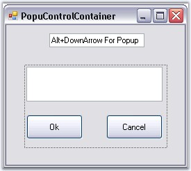
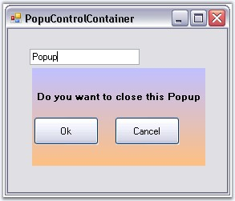

A PopupControlContainer is a panel-derived control that allows users to populate it with child controls in code or during design-time and then insert it in code with a call to PopupControlContainer.ShowPopup. It also provides various options with respect to its border alignment with a popup-parent.
The PopupControlContainer was implemented to support creating custom control-rich popups and show them beside a popup-parent, such as a context menu.

Figure 379: PopupControlContainer During Design-Time
In code, call ShowPopup to show the popup anywhere in an application. It also allows you to align a popup beside a control (like in combo boxes) or popup at any given point (like in context menus).

Figure 380: PopupControlContainer during Run Time
The PopupControlContainer also exposes its top-level parent host (a form-derived class) that lets you configure the parent form (to make the parent's borders resizable, for example).
The Syncfusion XP Menus framework lets users associate a PopupControlContainer with a menu item and show it from within a menu or toolbar. The Syncfusion CommandBars also let you associate a PopupControlContainer with it to be shown when the user clicks on the command bar drop-down button.
 Features
Features